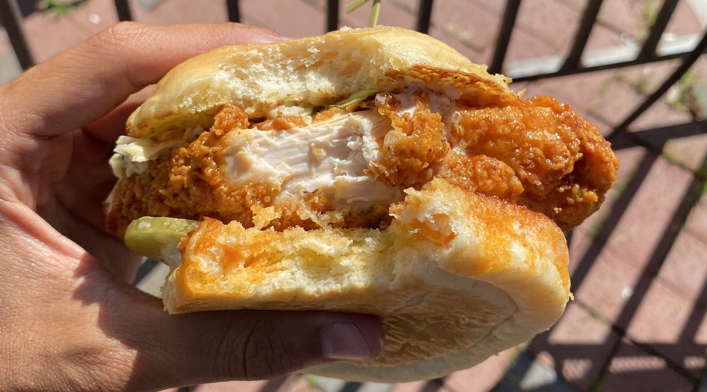

Day 11: Sherlock Off-Screen
June 15, 2021
I really like murder mysteries. I grew up on Cool Riddles, and before my pitiful reading of Dark Matter, I began my trip with Anthony Horowitz’s The Word is Murder. What I enjoy most about mysteries is the prominence of selective information: as a reader, you’re constantly reminded that the author is keeping just enough from you, teasing and fending you off just the same. Surely she knows the answer from page one.
I enjoyed The Word is Murder. The main character is the author himself, whom a detective hires to write a story about the dissolution of a complex, real-time murder plot. It’s especially a cluster: the reader must confront a handful of layers of events, each relevant to the narrative in its own right. There’s the real author, who namedrops all of his current and former projects throughout; the fictional author, as he writes a book for a fictional detective; and the fictional murder, with all of its twists and turns in real places. While reading, I wondered exactly what I was reading: the book that the real Horowitz wrote for publication, or the book that the fictional Horowitz wrote for his detective.
In an interview, Horowitz talks about the idea of “disappearance.” He softly separates his mystery style, where the details are available before you, never hidden; from the writing of, say, Sir Conan Doyle, where Sherlock Holmes learns something off-site that he only reveals later.
I have so far made the assumption that you are curious enough in my blog to want to keep reading. (A classic trick of superposition––if you see this sentence, you’re already curious; I’m only embarrassed if you haven’t read it till now, which is impossible, given you’re reading this. If you read this and say I’m not curious!, somehow defending yourself against these pixels, we’re probably both worse off.) Given this curiosity, I imagine most of you would enjoy a more complete picture of my day-to-day activities. Neither of the preceding posts seems to suffice for such information.
So, this is my B roll, the Sherlock off-screen, my unadulterated day before you.
I slept in south Richmond, in my friend Excellence’s childhood bed. I rolled downstairs at around 9 a.m. to an egg- and bacon-filled Tupperware, which I downed before driving into the city.
A few days earlier, a young, maybe 20-something-year-old man stared at me while I searched for parking. He was hip, a crucifix hanging from his left ear, a tank top nailed to his big chest. When I finally found a corner spot in a garage to stash my car, he followed.
As I unloaded my bike from the trunk, he approached me and asked for my number. Truthfully, I was complimented––this never happens!––though I respectfully declined. I had little time left in Richmond, and to my knowledge so far, I am heterosexual. Unmoved, he kept looking at me. He asked twice to smell my feet. After my awkward but forceful “No,” he backed up, but stayed facing me.
I locked my things up and sped by him. I went back early that day to avoid the dark, and swore not to park there again.
On my second day in Richmond, I played in an open-play chess tournament at a local public school, where I got decimated by some guy named Spencer. I opted to park there, even though it was a bit farther from downtown.
A basketball court lay adjacent to the lot, where wood planks and broken rail-guards amounted to a fair emulation of a skate park. Two locals were there practicing tricks. I joined them on my bike, and eventually tried a few jumps. I fell just once, which wouldn’t be so bad if I weren’t still wearing my Chacos. You can take the boy out of the youth, but you can’t take the youth out of the boy!
Those who know me well know that I love Siddhartha. Those who know me well who have read the Alchemist are surprised that I haven’t yet read it. Allegedly, they're similar. I set out to finally meet people's expectations and grab a copy.
I biked three-ish miles to Fountain Bookstore, a boutique shop in downtown Richmond. They didn’t have it. A bit ashamedly, they sent me to Chop Suey, a used book store another three-ish miles away. They also didn’t have it. The biking was nice; the sweaty, failed attempts at finding this book that everyone talks about were not.
I was running late for a lunch meetup with a fellow UNC student at Jefferson Park. I sped back to my car, loaded my bike into the trunk, and drove across the city. We ate caprese ciabatta and ketchup chips––she swore she misread the package––and overlooked the city, the clouds still, the skyline shining brilliantly from the noon sun. We talked about parents, domineering personalities, and their intersections.
Richard Hamming gave a talk in the 80s about his colleagues, specifically what separates the goods from the greats. In his time at Bell Labs and Los Alamos, he noted a handful of common traits: working with the door open, finding a way to dream mostly about things you’re interested in, etc. You can read for yourself. Quite interestingly, he also talks about luck:
And I will cite Pasteur who said, “Luck favors the prepared mind.'' And I think that says it the way I believe it. There is indeed an element of luck, and no, there isn't. The prepared mind sooner or later finds something important and does it. […] The particular thing you do is luck, but that you do something is not.––Richard Hamming, “You and Your Research”
After I dropped my friend off, I returned to my parking spot and changed clothes. A Columbus Blue Jackets shirt replaced my three-days-straight, sweaty, torn UNCUT tee. This was, in hindsight, a great, lucky decision.
I rode to Ironclad Coffee––my favorite in Richmond––to write a former rendition of this blog. As I ordered a Nagami Mocha (house-made kumquat sauce, Irish gin reduction, dark chocolate), a man in an Homage Ohio tee scaled the steps. It’s the kind of shirt you only get if you love Ohio, and if you’ve been to Tuttle or Easton Mall.
I grabbed my drink and went upstairs. He saw me; I saw him. We shared a kind exchange: Ohio? Ohio!, and ultimately agreed to share a table. He said he liked the state, though he had only been there for a year. He moved to Richmond to be a YouTuber, where he reviews, ranks, and discusses fantasy full-time. He is as successful now as he is––and I imagine, always has been––brilliant.
I shared with him that I came to the coffee shop to write my blog; he shared that he came to finish his second novel. We sat, talked, and wrote together. As resident history nerd, he said, he asks people what moment in history they would teleport to. As I delayed my answer, he said he would want to see what happened to Alexander the Great’s body. I eventually shared that I would like to see the exile of Ovid.
We exchanged numbers and agreed to hang out later in the week. I left to eat at the locally-renowned Hot Chick, where I ordered the Nashville Hot Sandwich (see below; it tasted better than it looked), and chatted with the waitress. She noted my Columbus shirt, and called over her Columbus-born coworker. We talked about the area, compared it to Richmond quite a bit, and discussed the unrevealed “summer drink menu.” He brought me a top-secret summer Mule, dosed extra with Belle Isle Honey Habanero Moonshine.
My friend from lunch joined me again. We walked along the James River and found a seat at the canal, admiring the trail’s intersections with plains, water, and high-rises all within a few miles. After a touch under two hours, I walked her home and left for another brewery: Triple Crossing Beer.
Bikes are magical things. I scaled across downtown in minutes, Julia Michaels on repeat, no flies in my eyes this time. The brewery was mostly empty: I noticed the flow from the backlit kettles, and the compact pack of seats around the bar. I struck a chat with the brewer––I'm biking up the coast, stopping in breweries along the way, I'd love to try your city-famous beers. He gave me a set of 4oz samples, and suggested a handful of Richmond favorites to visit, one of which is the brewery where I’m currently writing this blog. (Adam, one of the brewers here, just shared with me that he is a creative writer and biker as well, and even brought me an unreleased Atlantico. Sweet guy.) A fellow bargoer, William, overheard my story, and started talking to me.
We chatted about all things relevant to us: biking, his wife’s job at Target, his undergraduate time at VCU. I shared that I may (may) start doing contract work for Unity, and he showed me a former college project, where he used Unity to build a digital studio for the graduating art students who lost graduation due to COVID-19. After William graciously provided a round, a woman named Katie joined. A Philadelphia native, Katie shared the key sights in the city, which I'll report back on in early July.
Near 10 p.m., I biked 20 or so blocks to Oak and Apple, where local UNC interns joined for drinks and nachos. After a nice conversation with the host, we wandered off into the downtown.
There was a Caribbean lounge, Bellos, where a guard covered the front and music boomed on the inside. The DJ jumped violently behind the doors, willfully ignorant of the way his music breached the street. Of course, we approached, and of course, we were denied entry, on the grounds that our shoes were too informal––the Chacos fail me again!––and that I was wearing gym shorts. Just then, I noticed the Ohio State gear printed on the DJ’s shirt. OH!- I screamed, to which he shouted -IO! Just after, I told the bouncer I’m Trinidadian, and just then, the owner came out and overheard. They’re good, he says.
Next thing we know, we’re slotted next to the bar, sipping a G&T and wiggling our shoulders while hookah blows behind us. We danced and laughed, ending the night with a brisk walk, a bike back to my car, and then a trip back to Excellence’s house.
Today, I visited a handful of places: Fountain Bookstore, Chop Suey, Jefferson Park, Ironclad Coffee, Hot Chick, Triple Crossing Beer, Oak and Apple, and Bellos. I went to a handful of other places briefly––a bike shop, another coffee shop, a bakery––but whose stories would have made this entry a bit long.
A handful of lucky things seem to happen each day. A fellow bargoer overhears my story and brings me a drink; an Ohio shirt spawns a friendship, and then another; my heritage grants me entry into a lounge. A creative writer hears I'm blogging and sends me his short story. A biker hears my journey and offers to join for a few miles. It’s like I’ve been in the right place at the right time; like the right person always takes interest. And I prepare for it––if not look for it––by riding around, lots and lots per day.